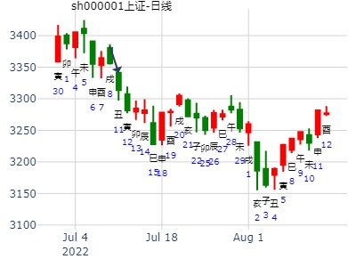

主帖标题: 试mang测大东海A2.18-2.28哪日是底？
出生：2020 年 性别：男 占事：没填
公历起卦时间：2020年2月25日12时13分 (电脑自动)
干支：庚子年 戊寅月 戊戌日 戊午时 （日空：辰巳）
神煞：驿马－申 桃花－卯 日禄－巳 贵人－丑，未
乾宫：风地观 兑宫：泽地萃
六神 伏神 本 卦 变 卦
朱雀 妻财辛卯木 ▅▅▅▅▅ ○→ 父母丁未土 ▅▅ ▅▅
青龙 兄弟壬申金 官鬼辛巳火 ▅▅▅▅▅ 兄弟丁酉金 ▅▅▅▅▅ 应
玄武 父母辛未土 ▅▅ ▅▅ 世 ╳→ 子孙丁亥水 ▅▅▅▅▅
白虎 妻财乙卯木 ▅▅ ▅▅ 妻财乙卯木 ▅▅ ▅▅
螣蛇 官鬼乙巳火 ▅▅ ▅▅ 官鬼乙巳火 ▅▅ ▅▅ 世
勾陈 子孙甲子水 父母乙未土 ▅▅ ▅▅ 应 父母乙未土 ▅▅ ▅▅
六四：观国之光，利用宾于王。象曰：观国之光，尚宾也。
九五：观我生，君子无咎。
上九：观其生，君子无咎。
庚子 壬午 癸卯 丙辰 (辰巳空) 庚子年五月初九(2020/06/29 08:42:01)
风地观 泽地萃
白虎 妻财卯木 ○ 父母未土 ∥
兄弟壬申：腾蛇 官鬼巳火 ／ 兄弟酉金 ／ 应
勾陈 父母辛未 × 乾 子孙丁亥 ／
朱雀 妻财卯木 ∥ 妻财卯木 ∥
青龙 官鬼乙巳 ∥ 官鬼乙巳 ∥ 兑
子孙子水：玄武 父母未土 ∥ 应 父母未土
避免误伤 后续反馈
上证未月 月卦
公历时间：2022年7月10日19时36分
干 支：壬寅年 丁未月 甲子日 甲戌时
旬 空：辰巳 寅卯 戌亥 申酉
乾宫：风地观 兑宫：泽地萃
六神 伏 神 【本 卦】 【变 卦】
玄武 ▄▄▄▄▄ 妻财辛卯木 ○ ▄▄ ▄▄ 父母丁未土
白虎 兄弟壬申金 ▄▄▄▄▄ 官鬼辛巳火 ▄▄▄▄▄ 兄弟丁酉金 应
螣蛇 ▄▄ ▄▄ 父母辛未土 世× ▄▄▄▄▄ 子孙丁亥水
勾陈 ▄▄ ▄▄ 妻财乙卯木 ▄▄ ▄▄ 妻财乙卯木
朱雀 ▄▄ ▄▄ 官鬼乙巳火 ▄▄ ▄▄ 官鬼乙巳火 世
青龙 子孙甲子水 ▄▄ ▄▄ 父母乙未土 应 ▄▄ ▄▄ 父母乙未土

占事：报喜鸟在12月前两周的走势如何 安圆圆
公历起卦时间：2014年11月29日14时24分 (手工指定)
干支：甲午年 乙亥月 甲辰日 辛未时 （日空：寅卯）
乾宫：风地观 兑宫：泽地萃
六神 伏神 本 卦 变 卦
玄武 妻财辛卯木 ▅▅▅▅▅ ○→ 父母丁未土 ▅▅ ▅▅
白虎 兄弟壬申金 官鬼辛巳火 ▅▅▅▅▅ 兄弟丁酉金 ▅▅▅▅▅ 应
腾蛇 父母辛未土 ▅▅ ▅▅ 世 ╳→ 子孙丁亥水 ▅▅▅▅▅
勾陈 妻财乙卯木 ▅▅ ▅▅ 妻财乙卯木 ▅▅ ▅▅
朱雀 官鬼乙巳火 ▅▅ ▅▅ 官鬼乙巳火 ▅▅ ▅▅ 世
青龙 子孙甲子水 父母乙未土 ▅▅ ▅▅ 应 父母乙未土 ▅▅ ▅▅
此卦由于刚刚大涨，应在事前了。卯日一涨停，就变寅卯空了。于是兑现到前面了。
三合局中神不得日月，且空。
酉冲空，力不大，小涨。戌则暴跌。
三合局涨停后旬空典型。
占事：用友软件是2015年大牛股吗？
时间: 2014-12-21 19时59分
干支: 甲午年丙子月丙寅日 (旬空: 戌亥 )
风地观 泽地萃
六神 伏神 本 卦 变 卦
青龙 ▅▅▅▅▅ 妻财卯木 Ｏ→ ▅▅ ▅▅ 父母未土
玄武 兄弟申金▅▅▅▅▅ 官鬼巳火 ▅▅▅▅▅ 兄弟酉金 应
白虎 ▅▅ ▅▅ 父母未土 世Ｘ→ ▅▅▅▅▅ 子孙亥水
腾蛇 ▅▅ ▅▅ 妻财卯木 ▅▅ ▅▅ 妻财卯木
勾陈 ▅▅ ▅▅ 官鬼巳火 ▅▅ ▅▅ 官鬼巳火 世
朱雀 子孙子水▅▅ ▅▅ 父母未土 应 ▅▅ ▅▅ 父母未土
中神卯得日助。